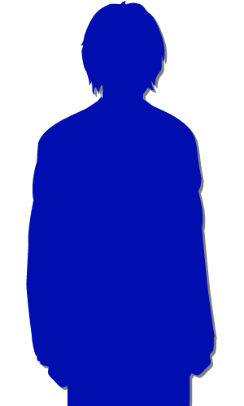

Script 00002158
「桔梗殿、東京にはあなたのように西洋に興味のある方は、やはり多いのですか？」
「そうですね、男性の中にはそのような方もおられます。 でも、やはり女性にそういう人はなかなか……」
「では、桔梗殿も男性方と意見交換を？」
「まさか、そんなことできるはずがありません。 女はただ、男性の良き妻となるよう求められるだけ」
「そうですね、男性の中にはそのような方もおられます。 でも、やはり女性にそういう人はなかなか……」
「では、桔梗殿も男性方と意見交換を？」
「まさか、そんなことできるはずがありません。 女はただ、男性の良き妻となるよう求められるだけ」
「そうですか……それはもったいないことです。
愚かな男もいれば、聡明な女もいる。
これはきっと、東京も荒田も同じこと。
意欲と情熱があれば、性別なんて関係ないと思いますが……」
「そうなんでしょうか、私は子供の頃から、いつも怒られながら本を読んでいました。 だから、私はいつもどこか後ろめたさが……。 荒田にはどのような女性がいるんですか？」
「そうなんでしょうか、私は子供の頃から、いつも怒られながら本を読んでいました。 だから、私はいつもどこか後ろめたさが……。 荒田にはどのような女性がいるんですか？」
「俺たちの集落では、大魔女と呼ばれる女性が長として集落をまとめています。
やはり大魔女ともなると、聡明さのみならず、先見性や人望も必要。
大魔女こそが、集落の知恵と知識の結晶なんです」
「すごいですね……。 女でもそんなに活躍できるなんて……」
「すごいですね……。 女でもそんなに活躍できるなんて……」
「でも、もしこのままこの国の西洋化が進めば、きっと女性も活躍できる時代になると思いますよ」
「………… そうでしょうか……」
「………… そうでしょうか……」

「…………？」
「例えそうだとしても、本当に活躍できる女性なんて、本当にごく一部。 私のような町人の娘など……。 それに……」
「例えそうだとしても、本当に活躍できる女性なんて、本当にごく一部。 私のような町人の娘など……。 それに……」
「それに私……
来月結婚するんです」
「結婚、ですか……」
「はい、そうなったらもう、自由に本を読むこともできなくなるでしょうね。 夫を支え、子を育て、家のために働くのが女の務め。 もう……私のお遊びも終わりです」
「結婚、ですか……」
「はい、そうなったらもう、自由に本を読むこともできなくなるでしょうね。 夫を支え、子を育て、家のために働くのが女の務め。 もう……私のお遊びも終わりです」
「だから晃様とこうしてお話できるのも、もう最後になるかと思います」
「そうでしたか……」
晃様はそのまま、川の流れに目をやる。
「そうでしたか……」
晃様はそのまま、川の流れに目をやる。
川は上流から下流に流れる。
その流れに逆らうことなどできない。
この自然の摂理に逆らうことなどできない。
私も同じ。
女は夫のために働くもの。
何百年も続いてきたその慣習に逆らうことなど――。
その流れに逆らうことなどできない。
この自然の摂理に逆らうことなどできない。
私も同じ。
女は夫のために働くもの。
何百年も続いてきたその慣習に逆らうことなど――。
…………
何を考えているのだろう、私。
なぜ今、慣習に逆らうことを考えたのだろうか。
やっぱり…… 私は……。
なぜ今、慣習に逆らうことを考えたのだろうか。
やっぱり…… 私は……。